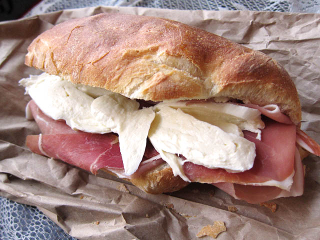

Prosciutto sandwhich
Prosciutto sanwhiches are the best because you get the perfect balance of saltyness and creamy goat cheese. Prosciutto and goat chees seperately are some of my favorite foods and together they are so amazing. You also have to use sourdough baguette for your bread or else it won't be yummy.

HOME